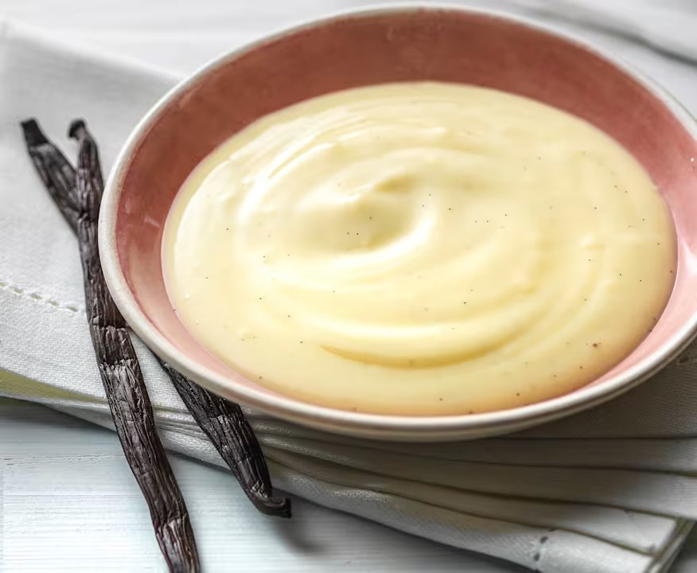

Crème dessert à la vanille
Ingredients
4×
- 0.5 à 1 gousse de vanille
- 500 g de lait
- 2 jaunes d'oeufs
- 50 g de sucre
- 1 pincée de sel
- 20 à 30g de fécule de maïs

Préparation
Étape 1
Fendre 0.5 à 1 gousse de vanille et gratter les grains. Mettre grains et gousse dans le bol.
Étape 2
Ajouter 500 g de lait, 2 jaunes d'oeufs, 50 g de sucre, 1 pincée de sel et 20 à 30g de fécule de maïs. Cuire 7 min/90ºC/sens inverse/vitesse 3.
Étape 3
Retirer la gousse et répartir dans des ramequins. Servir tiède, ou filmer au contact et garder au frais.
Conseils
- Crème épaisse : pour plus liquide, réduire la fécule à 10g.
- Crème aux blancs en neige : fouetter 2 blancs 2 min/vitesse 3.5 avec le fouet et les incorporer à la crème tiède.
- Crème pâtissière : 1 gousse de vanille, 500g de lait entier, 2 oeufs + 2 jaunes, 80g de sucre, 50g de farine. Optionnel : 50g de beurre froid après cuisson, 10 sec/vitesse 4.